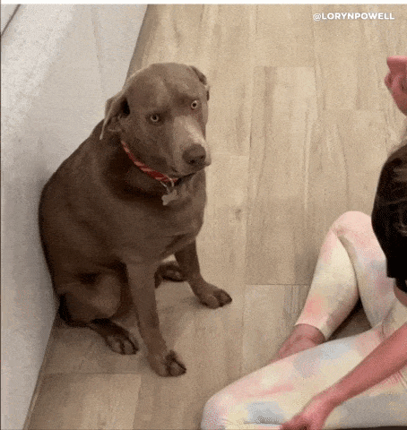

Фритрек и нулевой спринт: Подготовка к работе

<shock>
Это было самое начало пути. На этом этапе важно было проникнуться основами и настроиться на учёбу. И, возможно, подумать, как новые знания могут повлиять на ваше будущее.
По моим ощущениям, фритрек был наполнен очень большим количеством информации, даже несмотря на то, что ранее я уже сталкивалась и с версткой, и с JS. Было очень интересно, но после прохождения чувстововала себя, как собачка на джифке(мы же выучили, как правильно говорить 😂)